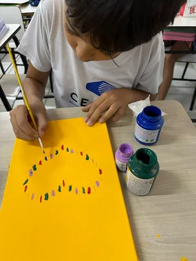

Reconto
Desenhos, escrita e oralidade dão novas formas às histórias. Cada estudante reconta uma obra com seu próprio olhar.
Conhecimento, criatividade e vínculos para construir uma base sólida. Aqui, cada experiência é uma oportunidade de aprender com o outro e com o mundo.
Agendar uma visita
Nossa proposta sociointeracionista aproxima o ensino da prática. Ao trocar ideias, investigar e criar, o estudante participa ativamente da aprendizagem e amplia suas possibilidades de expressão.
Desenhos, escrita e oralidade dão novas formas às histórias. Cada estudante reconta uma obra com seu próprio olhar.
Um projeto que valoriza a escrita como caminho para ampliar conhecimentos e se comunicar com clareza.
Atenção, memória e pensamento estratégico se desenvolvem junto à capacidade de lidar com desafios, escolhas e frustrações.
Dobraduras, modelagem, pinturas e experimentos conectam o conteúdo às descobertas feitas com as próprias mãos.
Ritmo, movimento e expressão artística estimulam a criatividade, a convivência e a coordenação motora.
O cuidado com as emoções caminha ao lado de novas formas de se comunicar, com LIV e Eduall.
Os recursos do Sistema de Ensino Bernoulli apoiam o percurso de aprendizagem e as práticas em sala.
Ações solidárias aproximam escola e famílias, promovendo cuidado, participação e responsabilidade com o outro.
Converse com a equipe sobre a rotina, as turmas e as experiências que fazem parte do dia a dia.
Horários apresentados no material pedagógico. Confirme com a equipe as turmas e a disponibilidade para o próximo período letivo.
Agende uma visita pelo WhatsApp. Nossa equipe poderá conversar sobre a proposta pedagógica e combinar um horário para receber sua família.
A aprendizagem é construída por meio das interações, das experiências e da participação ativa dos estudantes. O professor faz a mediação, reconhecendo o repertório e o desenvolvimento de cada aluno.
Venha conhecer nossa proposta, conversar com a equipe e sentir de perto o que faz parte do dia a dia CEABA.